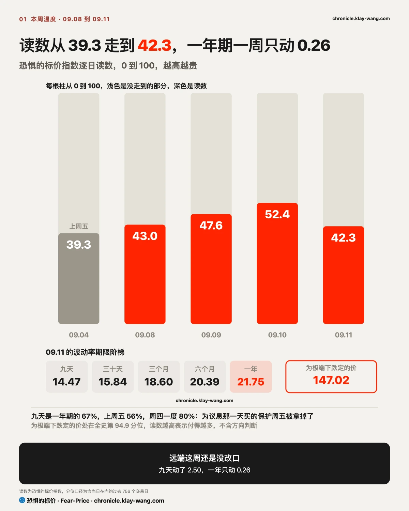
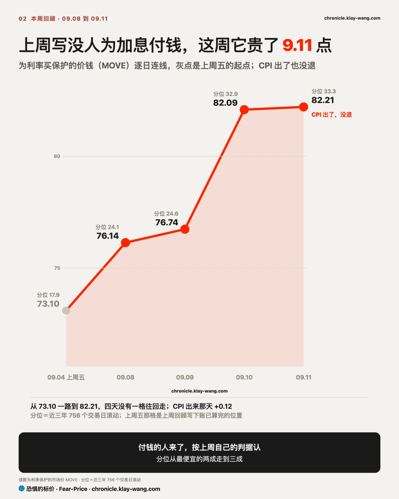
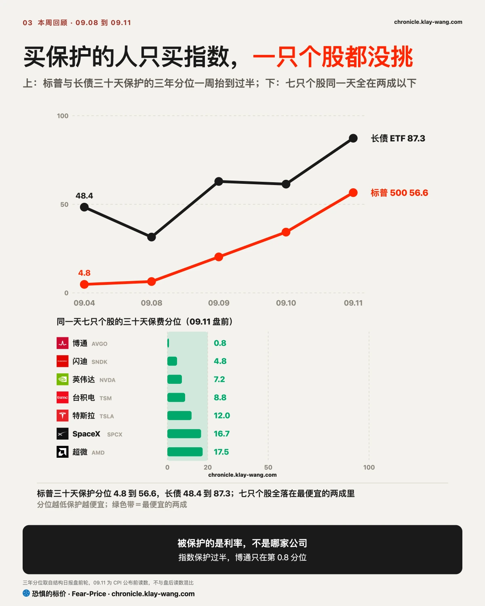
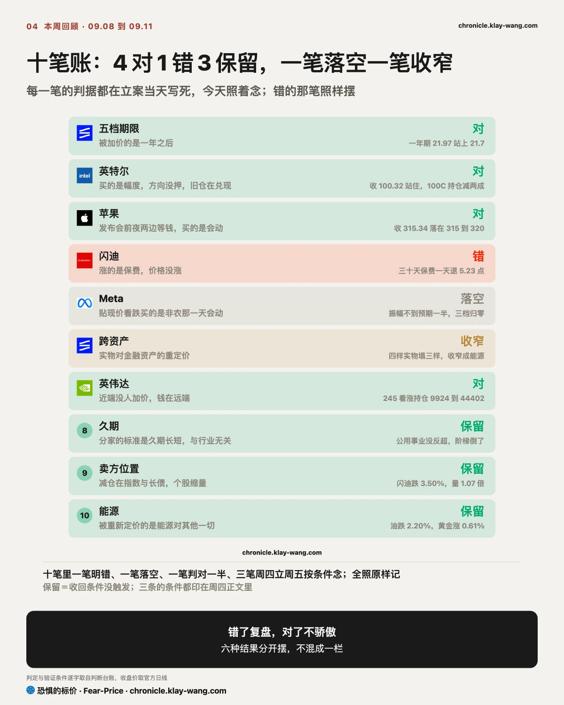
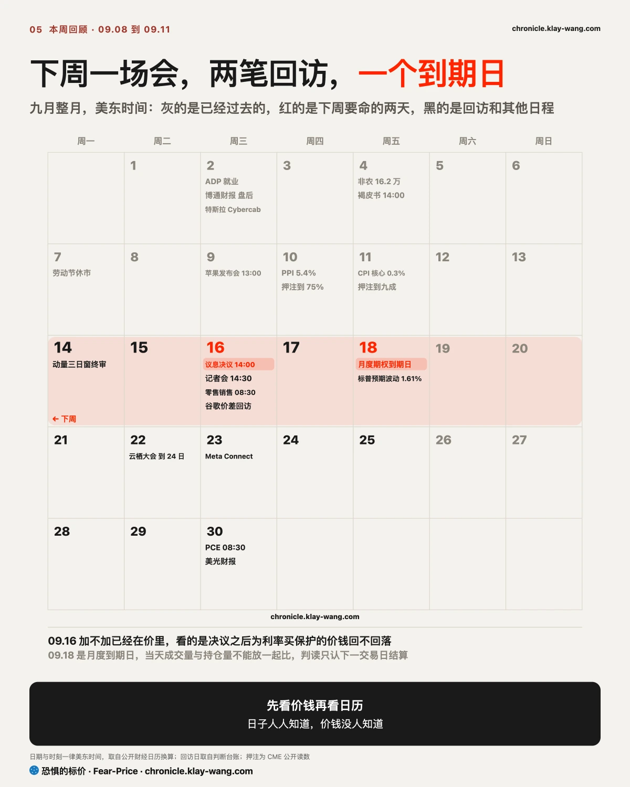

恐惧的标价指数（Fear-Price Index）· 2026-09-11 · 读数 42.3/100：一年期波动率 VIX1Y 为 21.75，处于近三年第 42.3 百分位，高即贵。逐日台账与口径 → chronicle.klay-wang.com · 转载注明：恐惧的标价指数 · Fear-Price
上周五 39.3，周四 52.4，周五收在 42.3。一年期一周只动了 0.26；九天期抬了 2.50，周四一度冲到 17.70。上周写短端在为一场会定价，远端没改主意，作废条件是一年期明显抬上去。一年期没有明显抬，那句留着，判据补一条数：一年期站上 23 才算明显。

我的判断：9 月加息已定，债市押之后继续加，股市押加一次就停，我站债市。 两边有一边下周要改口。
加不加已经没有悬念，四家投行 CPI 当天全改成押 9 月加息，分歧挪到了加完之后：最鹰的道明押 9 月、10 月、明年 1 月连加三次，最鸽的花旗押加一次就停、明年 6 月降，中间差两次加息。
债市押的是连加那条路。为利率买保护的价钱从上周五的 73.10 涨到周五的 82.21，四天逐日上行，CPI 公布当天维持在 82.21。这个价钱量的是利率会动多大，加息在 CPI 之前已经七成，它买的是加完之后利率往哪走。
周四两年期收益率单日上行十几个基点，为 2024 年以来最大；三十年期收益率触到 5.37%，2007 年以来最高；财政部当天六十亿美元的长债回购只买到五十二亿，市场出价不够便宜。同一天布伦特原油结算在 107.63 美元，四个月新高。
我站债市这边的理由有两条。第一，这轮通胀来自能源和财政：柴油、汽油各占 PPI、CPI 涨幅的三分之一以上，油价由中东供给决定，周四胡塞武装占领也门港口、沙特八月日产量较七月降 23%，加一次息压不住。第二，财政部在发债，回购填不上，长端利率由供给决定，加息只管短端。这两条都在，加一次停不下来。股市周五把加息当成已经发生的事，为股票买保护的价钱一天下降近两个点，二十九个标的全部下降，这个价钱下周会回来。
如果 09.16 决议之后为利率买保护的价钱跌回 76 以下，说明债市也认了加一次就停，这条判断推翻。如果决议后标普三十天保护的价钱回到 14 以上，说明股市这边先改口，这条判断成立。

我的判断：本周被真正重新定价的是先花钱后收钱的生意，云厂商和存储；英伟达跟着客户跌，卖它的理由是仓位，不是它的现金流。 下面按四步走：各家怎么收钱，利率变了折谁的现金流，债市定了什么利率路径，期权市场怎么验证。
第一步看各家怎么收钱。英伟达在整条 AI 链里收钱最早，芯片交给云厂商两个月左右回款，毛利七成上下，自己几乎不借钱。它的客户微软、亚马逊、谷歌、Meta 正相反：先花几百亿美元建机房，靠租金和按量收费用四到六年收回，今年发了近两千亿美元债来补这笔开支。闪迪和美光在中间：自己掏钱扩产，新产能两三年后才出货，这两三年押在内存价格不跌上。
第二步看利率变了折谁的现金流。长端利率一涨，越靠后的现金流折得越狠，先被重新定价的是云厂商、存储这类先花钱后收钱的生意。英伟达自己的现金流很近，按理最不该跌，它跌是因为它的收入就是云厂商的资本开支，市场先问出钱的一方还花不花得起，没等答案先把收钱的一方卖了。
第三步是债市给出的利率路径：为利率买保护的价钱一周涨 12.5%，CPI 之后没回落，债市押的是 9 月之后继续加。折现率这周在抬，前两步的顺序就是本周的跌幅顺序。
第四步用期权市场验证这是重新定价还是仓位调整。如果是重新定价，为英伟达买保护的价钱该涨；实际没涨，还是二十一只里最便宜的一档，和博通、闪迪并列，周四放量的是半导体 ETF 不是它自己，押它涨的钱去买了 12 月到期、行权价高 12% 的看涨，一天多了三万四千张。有人在卖指数和长债，没有人在针对英伟达下注。存储那边一样，闪迪周五跌 3.5%，成交量没放大，保护也没涨价。
四步走完，本周的涨跌就能归位。跌得最多的三只是闪迪、英伟达、美光，都是八月的大赢家，闪迪和美光是被折现的，英伟达是跟着客户跌的；涨得最多的超微、英特尔、Meta、苹果，八月都没怎么涨。超微和英伟达卖同一类芯片，一个涨 8%，一个跌 5%，产业链解释不了这个差别，仓位能。例外是 SpaceX 和特斯拉，八月涨得最多，本周还在涨。
苹果、SpaceX、特斯拉三只，本周的期权成交都指向本周之后：
如果下周为英伟达买保护的价钱明显抬起来而股价继续跌，说明有人开始针对它本身下注，这条判断推翻；如果闪迪成交量放大到前一日的 1.3 倍以上且继续下跌，说明存储股出现集中卖盘，同样推翻。

持存储的：闪迪、美光这周跌得最多，但成交量没放大，保护也没涨价，没有人在集中卖。它们的生意是先花钱扩产、几年后收钱，利率一涨最先被重新定价，跌是指数带动的。看一个数：哪天成交量放大到前一天的 1.3 倍以上且续跌，那天才算有人交货。
持半导体的：半导体 ETF 周四放量下跌，里面超微、英特尔、迈威尔涨，英伟达、美光跌，涨跌按八月涨了多少分，不按产业链位置分。为英伟达、博通、台积电买保护的价钱都在最便宜的一档，没有人为这三只的下跌付钱。在保护的价钱明显抬起来之前，它们跟着指数走。
持 M7 的：七只这周分成两半，苹果、Meta、特斯拉涨，英伟达、微软、亚马逊跌，谷歌持平。要看的是保护的价钱：Meta、亚马逊、微软这三家靠发债扩建数据中心，这周有人在为它们买保护，价钱明显抬了；英伟达收的是它们的钱，为它买保护的价钱没动。市场在为出钱的一方担心，没有为收钱的一方担心。下周决议后长债不再跌，这三家的保护该回落；长债再跌一轮，先重定价的还是发债多的这三家。
持指数 ETF 的：周五为标普买保护的价钱降到本周最便宜。下周决议后如果它回到周四的水平以上，周五的便宜来自到期日对冲自然消失，和市场松口气无关。
彩蛋：油轮运费 ETF（BWET）一年涨了 5130%，从 13.90 到 726.92；它追踪原油油轮即期运费期货，全部押在海峡冲突持续上，停火或通航恢复的任何信号都能让它几天内暴跌，没有基本面、没有股息、没有分散。
上周主线错了半句：有人在加保护，加在长期国债上。上周回顾写市场早就为加息做过准备，不需要再花钱加保护，前半句还成立，后半句错了：为长期国债买保护的价钱一周从三年里偏中间的位置涨到最贵的一成半，涨幅仅次于标普。错在只看了价钱当时高不高，漏看了它前五天在往哪走，把一段下坡的尾部读成了底部；判据补一条，价钱处在最便宜的两成且连跌三天以上，才算账已经算完。
对的四笔：五档期限那条，一年期站上 21.7；英特尔那条，站住 100 且旧仓在兑现；苹果那条，发布会当天收在 315 到 320 之间两边归零；英伟达那条，12 月 245 看涨的结算持仓比前一日增了 85%。
错的一笔：闪迪那条写涨的是保费，两天后保费回落、股价上涨。落空的一笔：Meta 那批看跌写买的是非农那天会动，非农那天它只动了 1.99%。收窄的一笔：跨资产那条写实物对金融，第二天四样实物塌了三样只剩油，收窄成能源对其他一切。
保留的三笔，周四立案、周五按条件核对：久期那条公用事业未反超必需消费；卖方位置那条闪迪缩量续跌；能源那条油跌黄金涨。三条收回条件均未触发。

下周三个日子。09.14 动量三日窗终审。09.16 议息决议，加息已在价里，会后只看为利率买保护的价钱回不回落到 76 以下，判据写在上面〔债市〕一节末尾；同一天谷歌那笔价差回访，看两条腿的持仓有没有同步动。09.18 月度到期日，当天成交量与持仓量不能放在一起比，判读只认下一交易日结算。
